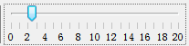

RED---RNA Editing Detector
A program to detect and visualize RNA editing events at the genomic scale using next-generation sequencing (NGS) data
1 Introduction
1.1 What is RED
RNA editing is one of the post- or co-transcriptional processes with modification of RNA nucleotides from their genome-encoded sequence. In human, RNA editing event occurs mostly by deamination of adenosine to inosine (A-to-I) conversion through ADAR enzymes.
RED (RNA Editing Detector) is a program to detect and visualize RNA editing events at the genomic scale using next-generation sequencing (NGS) data. The software intergrates multiple steps to filter spurisous variant sites, and then performs formal statistical tests to identify reliable RNA editing sites. A potential RNA editing site can be visualized in the context of reference genome (/gene).

Fig. 1.1 A screen shot of RED
RED is a Java-based program with Graphic User Interface (GUI), which works on mainstream operating systems (e.g., Windows, Linux and Mac OS X). To make it more efficient, everlasting and faster-saving, we use MySQL database management system (DBMS) in manuplicating huge NGS data. In addition, we use functions in R to perform statistical analysis. However, you'll never manipulate R and MySQL when you use RED. All of the operation relative to R and MySQL is completed by RED automatically. RED enables the analysis of RNA editing events at two levels (illustrated below) using VCF files from different sources and the presentation of full mapped sequence data using BAM/SAM file:
- Detection of RNA editing sites using RNA-seq data alone (i.e., De Novo identification)
- Detection of RNA editing sites using both DNA-seq data (e.g., whole exome sequencing) and RNA-Seq data
1.2 Prerequisites
- Java Runtime Environment (jdk 1.7.0_21 or later)
- MySQL Database Management System (MySQL 5.6.19 or later)
- R Environment (R 3.1.1 or later)
1.3 Installation
1.3.1 Install Java Runtime Environment
Java Runtime Environment (JRE) is basically the Java Virtual Machine (JVM) where your Java programs run on. It also includes browser plugins for Applet execution. Java Development Kit (JDK) is the full featured Software Development Kit (SDK) for Java, including JRE, and the compilers and tools (e.g., JavaDoc, and Java Debugger) to create and compile programs. In order to run RED, we need to install either JRE or JDK.
- JDK:
- JRE:
http://www.oracle.com/technetwork/java/javase/downloads/jdk8-downloads-2133151.html
http://www.oracle.com/technetwork/java/javase/downloads/jre8-downloads-2133155.html
1.3.2 Install MySQL Database
RED stores almost all data into database so that we can reuse the data for research. MySQL is one of the best choice since it is free and efficient. Install MySQL database with the following download page.
Although default configuration in MySQL can ensure your server works well, you could edit the configure file to gain better performance. For Linux System, edit the parameters in the file of /etc/my.cnf (default configuration path). For Windows System, you could use MySQL Workbench to configure your server efficiently.
1.3.3 Install R Environment
R is a free software environment for statistical computing and graphics. It compiles and runs on a wide variety of UNIX platforms, Windows and MacOS. To download R, please choose your preferred CRAN mirror.
The package of “rJava” in R is required, which ensures connection between R and Java. Open a R Window and type:
install.packages(rJava)
The package will be installed automatically with Internet connection.
1.4 Terminology
Several terms are used throughout the RED documentation and program. To make it more easier to be understood, we have a simple introduction.
1.4.1 Molecular Biology
- RNA Editing
RNA editing is one of the post- or co-transcriptional processes with modification of RNA nucleotides from their genome-encoded sequence.
- Reference Genome
Reference genome is a comprehensive, integrated, non-redundant, well-annotated set of reference sequences including genomic, transcript, and protein (hg19).
- Sequence Alignment Map (.bam/.sam) File
SAM format is a text format for storing sequence data in a series of tab delimited ASCII columns, while BAM format stores the same data in a compressed, indexed, binary form.
- Variant Calling Format (.vcf) File
VCF is a text file format (most likely stored in a compressed manner) which contains meta-information lines, a header line, and then data lines each containing information about a position in the genome.
1.4.2 Program
- Data Set
A data set stores a set of data, which is imported from a single file. It is an efficient way to be handled and presented. In program, a data set refers to a BAM/SAM file that contains sequence alignment/map information, which is displayed in the context of reference sequence.
- Data Group
A data group contains two or more data sets with different biological conditions to make it compared for some purposes (e.g., comparing RNA editing sites identified in cancer tissues and adjacent normal tissues). In a given data group, we aggregate data sets needed for research and save the results of comparison. This function has not completely worked , and we will try our best to make it come true in the next version.
- Data Store
A data store refers to either a data set or a data group. Most analyses and visualizations in RED operate on data stores and they work equally well with either data sets or data groups.
- Probe/ProbeBean
A probe represents a potential RNA-editing site which contains basic information (e.g., coordinate, reference base and editing base), while a probe bean contains all information derived from .vcf file.
- Probe Set
A probe set stores all probes from an initial vcf file, namely stores all RNA-editing sites without using any filter. It is also the root of a pipeline tree when executing any filter to the original probe set. The probe set is produced when a vcf file has been input into database.
- Probe List
A probe list is a subset of the probe set. Probe lists are generated by one or more filters implemented in RED, which store the remaining editing sites after filteration. However, we can produce probe lists from another probe list which had executed one or more filters.
2 Getting Started
2.1 Starting a New Project
Before starting a new project, make sure that you have configured all running environments mentioned in the Prerequisites section. You can either select a genome or connect to MySQL database when starting a new project, but both should be performed to make the program work properly.
2.1.1 Select a Genome
To start a new project, you may first select a new genome of interest. When the program is open, select File > New Project… to select a new genome. If there isn't any genome file in the local host, a warning notification will pop up as the following illustrated and tell you what you should do.

Fig. 2.1 Warning when there is no genome in genome directory
If you choose to download a new genome, click Import New button and find out the new genome you need.

Fig. 2.2 Select a new genome to download
After the download completes, the following dialog of Select Genome… will pop up.

Fig. 2.3 Select a new genome to import
It is noteworthy that it may take a little bit longer when importing genome data into RED for the first time. We have a cache mechanism to make it faster when you reload the same genome. Once you have selected your genome and it has been loaded, you can move on to the next step.
2.1.2 Connecting to MySQL Database
A simple database connection dialog will pop up when you select File > Connect to MySQL… as following illustrated.

Fig. 2.4 Connect to MySQL DBMS
With successful connection, the program will detect whether there is an database with imported data before and then make a relevant notification for the next step.
- Null in Database
If the database is empty (or null), the program will tell what you need to prepare for data import.

Fig. 2.5 Data import notification
Fig. 2.6 Data import dialog
A simple explanation for each kind of importing file was shown. It helps you locate what kind of data file should be imported when you select browse button.

Fig. 2.7 Importing data
After selecting all paths, press Import button and wait for a moment, all data will be imported to database.
- Data Which Don't Meet Your Demand in Database
After database is connected using database connection panel, Fig. 2.6 is present by selecting File > Import Data > Database… and you can import another data for further demand.
- Data Which Meets Your Demand in Database
Fig. 2.8 Notification of successful database connection and data loaded to database
If data have been loaded into database system, then you can filter spurisous variants for detecting potential RNA-editing sites.
2.1.3 Loading a BAM/SAM File (using both RNA-Seq and DNA-sequencing data; or only RNA-Seq data)
In order to make a full landscape of all potential RNA-editing sites at the genomic scale, the sequence alignment/map file (BAM/SAM), as well as variant calling format file (VCF), which has been imported to database, is needed. All potential RNA-editing sites will be shown in Chromosome Panel. The program only supports paired-end reads in the current release.
The SAM/BAM format has been well defined in Terminology section. We provided an option dialog to help import BAM/SAM data so you don't need to specify much information.

Fig. 2.9 An option dialog for importing BAM/SAM file
- Remove duplicate reads
Removing duplicate reads (reads of the same length and sequence identity) is a widely used practice to correct bias when analyzing NGS data. Tick if you want to remove. We strongly recommend you remove them because it may influence the result of coverage.
- Minimal mapping quality
Control the minimum mapping quality when importing data. You can choose to filter some reads in Chromosome Panel when importing data based on their mapping quality scores. The quality score ranges from 0 to 255 (with higher scores being better), and if you set a filter value then only mapped reads with a score above this value will be imported. Not all read mappers will include a score value so depending on where the file you are importing came from this option may have no effect.
2.1.4 Setting filters
Eight kinds of filters have been provided in RED, see Filters section for more detail. Before setting filters, database must be connected successfully. An initial set of RNA-editing sites (ProbeSet) will be present as a root tree named All Probes within Directory Panel. When one filter is executed, a leaf connected to this tree will be generated associated with the remaining RNA-editing sites.
For the tested data, we have imported BJ22.RNA.chr8.snvs.vcf and BJ22.RNA.chr8.snvs.bam file into database which has 9530 candidate RNA-editing sites.
Fig. 2.10 RNA-seq data and potential RNA editing sites within Directory Panel
Then we execute the Basic Filter with quality greater than 20 and coverage greater than 6.
Fig. 2.11 Basic Filter options
After filteration (for a few seconds), there is a subset of editing sites remained and a leaf will be produced within Directory Panel to describe and check what you have filtered out as illustrated below. At the same time, the Genome Panel and Chromosome Panel will present the RNA-editing sites by different colours.

Fig. 2.12 After executing basic filter, a probe list is generated
2.1.5 Reports
For now, we only support exporting editing sites information in text format. In the Directory Panel, right-click the probe list which you want to export, and select Show Sites List, Show Sites Distribution or Show Variant Distribution to make a report. Please see Probe Set and Probe Lists section for more details.
2.2 Opening an Existing Project
To open an existing project, select File > Open Project from the main menu. All RED project files use a .red file extension. A RED project stores all of the Data Set, Data Group, Probe Set and Probe List information for your project. It also remembers which data tracks were visible. See Saving a Project section for more details.
Although it stores the name of the genome you were using, it doesn't contain the actual genome data. If you are using RED on a new machine, it will automatically download and install the required genome when you open a project file. If you want to use RED when not connected to a network, you need to ensure that the correct genome has been installed locally. Once downloaded, genomes will be cached on your machine for future use.
3 Visualisation
The main window consists of Toolbar Panel, Directory Panel, Genome Panel, Feature Panel, Chromosome Panel and Status-bar Panel. Shown as following figures and table.
3.1 Main Window

Fig. 3.1 Main window
| Panel | Explanation |
|---|---|
| 1 | Toolbar Panel |
| 2 | Directory Panel |
| 3 | Genome Panel |
| 4 | Feature Panel |
| 5 | Chromosome Panel |
| 6 | Status-bar Panel |
3.2 Toolbar Panel

Fig. 3.2 Toolbar panel
The toolbar is a convenient way to access commonly used functions, which you can also access via the main menu or keyboard shortcuts.

These buttons allow you to change the data tracks between showing just reads, just probes or both reads and probes

This lets you change the data zoom level
- 
These buttons bring up either the Find Feature, or Goto Position search tools

Drag the tag and change the data zoom level.
3.3 Directory Panel
The directory panel gives you a quick overview of your Annotation sets, Data Sets, Data Groups, Probe Set and Probe Lists.
Fig. 3.3 Directory panel
The view consists of a set of folders which can be expanded or collapsed either by double clicking them or by clicking on the little + or - symbols which may appear next to them.
3.3.1 Data Sets and Data Groups
As well as seeing your Data Sets and Data Groups you can also use the data view to perform operation on them.
If you click on any DataStore entry in the Directory Panel, you will see it become highlighted. If that DataStore is currently visible in the Chromosome Viewer then it will have a red line at the top and bottom of the track so you can quickly see where it is.
If you right click (or Apple+click) on any DataStore you will see a popup menu of options appear.

Fig. 3.4 Popup menu of DataSet
The options are:
- Show Track in Chromosome View
This is a toggle option to turn a track on or off in the chr view. If the track is currently visible you will see a tick next to this option. New tracks are added a the end of the current set of tracks. For more flexible options for adding/removing tracks use the View > Set Data Tracks option in the main menu.
- Rename
This allows you to change the name of this Data Store.
- Delete
You can delete this data store (not allowed for Data Sets).
- Properties
This shows basic information about your data store, including name, file path, total reads, number of positive reads and negative reads, etc.
3.3.2 Annotation Sets
The annotation sets folder will only show you an entry for the core genome annotations which come with each imported RED genome. If you import extra annotation then this will show up in this folder.

Fig. 3.5 Popup menu of AnnotationSet
Right-clicking on an entry in this folder brings up a popup menu with the following options:
- Show Track in Chromosome View
This is a toggle option to turn a track on or off in the chr view. If the track is currently visible you will see a tick next to this option. You can also use Edit > Feature Panel option in the main menu.
- Properties
Brings up the number of features in each chromosome in this annotation set.
- Rename
Allows you to change the name of this annotation set.
- Delete
You can delete this annotation from your project (not allowed for Core Genome annotation).
3.3.3 Probe Set and Probe Lists
When you have imported a .vcf file called from the sequence mapped data, the probe set will automatically be initialized and named All Probes. After you implemented filters (no matter one or more) to the probe set, then a probe list would be generated to show filtering results.

Fig. 3.6 Popup menu of ProbeLists
Right-clicking on an entry in this folder brings up a popup menu with the following options:
- Show Sites List
Shows all editing sites in a table with filtering description and comments. The table consists of the following information: chromosome, position, reference base and alternative base.
- Show Sites Distribution
Shows all editing sites distribution in a histogram. See Sites Distribution section for more details.
- Show Variant Distribution
Shows all variant type distribution in a histogram. See Variant Distribution section for more details.
- Rename
Allows you to change the name of this probe list (now allowed for Probe Set).
- Edit Comments
Allows you to edit comments of a probe list. It mainly contains filtering information in default.
- Delete
Deletes this annotation from your project (not allowed for Probe Set)
3.4 Genome Panel
The genome panel shows an overview of all chromosomes from the reference genome. Once you have performed RNA editing filters, it will show a whole genome view of the editing sites. We showed the chromosomes in human only (chromosome 1 to 22, X, Y).

Fig. 3.7 Genome panel before executing filters
Fig. 3.8 Genome panel with RNA-editing sites highlighted
A karyogram view of all chromosomes was shown according to their relative sizes. Each rectangle represents a chromosome. The highlighted box shows a region currently being shown in the chromosome view. You can use the genome view to move the chromosome view to a different chromosome or to a different region of current chromosome.
3.5 Chromosome Panel
The chromosome panel is the most complex view in RED and is also where you’re likely to pay the most of your attention to. There are a lot of options for changing the information which it showed to you.
Fig. 3.9 The chromosome panel when current track length is longer than screen pixel
The view is divided into several tracks. The top of the display is a line of text which tells you which genome and chromosome you are currently viewing. It also lists the current position and provides the length of the current view.
Below the text line comes the core genome annotation feature track which has a blue background, the sequence track which is shown with specific status and below them is a set of data tracks which have a white/grey background.
Finally at the bottom is a status bar which can display various pieces of information, usually related to the data read position which is currently under the mouse.
In the chromosome panel, you can left-click the mouse to zoom in and right-click to zoom out. If you put your mouse over a read it will turn yellow as shown follow.
3.5.1 Feature track
The feature track mainly shows the feature from NCBI RefSeq Genes, which includes the information of transcription, coding region and exons. Features in this track are coloured in blue.
Fig. 3.10 Feature track with one complete feature
The feature is represented as a filled block of colour. There are three kinds of height in a feature. The most obslate region stands for the transcribed region, the fattest region stands for exons region within this feature, while the height between transcription and exon is coding region.
If you put your mouse over a feature it will display the feature name below the track. If you want to see more details about the feature you can double-left-click on it and a feature information window will open up.

Fig. 3.11 A popup dialog when clicking on the feature
In this popup window, you can double-click on the location to have an overview of this feature.
3.5.2 Sequence Track
The sequence track shows bases of reference genome generated from a .fasta file(illustrated below), see Real Base Status section for more details.
Fig. 3.12 Bases information of reference genome
3.5.3 Data Track
Data tracks can show three kinds of information.
- The position of the individual mapped reads with block status
- The position of the individual mapped reads with real base information
- The position of RNA editing sites associated with mapped reads
It depends on the whole view length of screen whether it displays with blocks or real base information. If the length is longer than the screen pixel, then the mapped reads are displayed with blocks. If the length is shorter, then there is enough space to place the base name, so the mapped reads are displayed in its real base name.
3.5.3.1 Blocks Status
RED shows sequence reads as gray blocks with the reads were mapped/aligned with the reference genome. Fig. 3.9 and the following figure show read as blocks status. The former view length is 9.77 MB while the latter is 2.54KB (1MB = 1000 KB = 1000000 bp).

Fig. 3.13 Block status in small areas
If you put your mouse over a read it will be highlighted in yellow. The status bar at the bottom will show the details of the position and length of the read.
3.5.3.2 Real Base Status
In the real base status, the reference genome base and mapped read base will appear in the same time. In order to distinguish all bases, we show bases in different colours.

Fig. 3.14 A given sequenced regions with bases shown in different colors
- Green = 'A'
- Black = 'G'
- Blue = 'C'
- Red = 'T'
Thus, it is convenient to discover whether a position has editing base and other editing information. We will provide more editing information with the following RED version released.
3.5.4 RNA Editing Sites Only
We provide the RNA editing sites information when you choose Show only Probes or Show Reads and Probes. We highlight the position of a RNA editing site with different colours.
- Green = 'G'->'A'
- Black = 'A'->'G'
- Blue = 'A'->'C'
- Red = 'C'->'T'

Fig. 3.15 Show only Probes
Fig. 3.16 Show Reads and Probes
3.5.5 Change Data Tracks
You can change which data tracks are shown and the order of the tracks by selecting Edit > Set Data Tracks, or by using the toolbar shortcut.
Fig. 3.17 Select data tracks displayed on the screen
The list of tracks on the right is the tracks which will be displayed in the chromosome view. The lists on the left are tracks which aren't currently being displayed. You can move tracks from one side to another, and move the visible tracks up and down the list to get the set you want.
Within the data track area you can mix DataSets and DataStores however you wish. DataSets are shown with red names and DataGroups with blue names.
In addition to the dialog for changing the displayed data tracks you can also add and remove individual tracks by using the popup menus available in the Directory Panel.
3.6 Status-bar Panel

Fig. 3.18 The status bar
The status bar is a notification area which usually shows relevant information for whatever object your mouse is over at the time.
Near the right hand end of the status bar is a small graph showing RED's current memory usage. It is worth keeping an eye on your memory usage since running out of memory will cause RED to run very slowly, and eventually to stop altogether.
The memory usage graph is in three parts:
- The red part indicates the memory currently being used by RED
- The orange part indicates memory which RED has reserved but isn't currently using
- The green part indicates memory which is available to RED but it isn't using
To get an accurate view of the current memory usage you can double click on this graph which will cause RED to pause and clean up all of its memory. What you then see will be the actual amount of memory which is being consumed by the program. At other times the usage will include inactive memory which RED hasn't got round to cleaning up.
The percentage value shown is the percentage of total available memory (green) which is currently being used (red). When this percentage reaches 90% you will get a warning since you are coming close to running out of available memory. In this case you should look at the memory settings and preferences documentation to see how you can enable more memory or reduce the amount of memory RED requires.
At the right hand end of the bar is a small icon which shows the current status of your disk cache. If this icon is red then caching is not being used. If it is green then caching is enabled but inactive. If it is orange then caching is enabled and data is currently being read from the cache. You can double click on this icon to turn disk caching on/off, but the change will not take effect until RED is restarted.
4 Filters
RED implemented a variety of different types of filters to reduce false positive rate of the RNA-editing sites.
It is worth spending some time looking through the different filters available. Each filter can be set as your favor. After each step, a set of candidate sites will be filtered out and these eliminated sites will be highlighted. Each color stands for one kind of filter. You can easily undo each step.
With different input data, you will choose de novo mode or Dna/Rna mode.
4.1 Reference files used in filters
filter |
Reference file needed |
Comment |
Websites |
repeatFilter |
hg19.fa.out.gz |
repeatmasker |
http://www.repeatmasker.org/species/hg.html |
comprehensiveFilter |
genes.gtf |
Gene features |
http://genome.ucsc.edu/cgi-bin/hgTables |
dnSNPFilter |
dbsnp_138_hg19.vcf |
Known snps sites |
http://www.ncbi.nlm.nih.gov/SNP/ |
P-Value Filter |
hg19.txt |
Known RNA-editing sites |
http://darned.ucc.ie/static/downloads/hg19.txt |
4.2 Denovo Mode
4.2.1 Input Data
A variant calling format (VCF) file from RNA-seq is necessary. There is no a standard protocol to call sequence variant from RNA-Seq data, although a highly accurate approach termed SNPiR has been presented to identify SNPs in RNA-seq data {Piskol:2013fn} Usually, it takes a few minutes to load bam file, while DNA sequencing data may take more time. We strongly recommend users follow regular format, some weird vcf file can’t be resolved correctly. If your vcf file contains more than one sample, please make an annotation before the process.
4.2.2 Basic Filter
First, you have to nominate target editing type that you want to study in . Usually, A-G is recommended.
Second, site quality and the depth of coverage of site were two key measures to be set up. You can select an upper and a lower limit for the range of values you want to include. If you leave the lower value blank then anything under the upper cutoff will pass. If you leave the upper value blank then anything above the lower cutoff will pass.
- Q: ranging from 1-200
- Base coverage: ranging from 1-200
4.2.3 Repeated Filter
Some repeated positions in DNA/RNA have not been proved to be functional, so we consider them as less useful. We will filter out bases located in such regions. However, SINA/Alu region is supposed to be somewhat functional, bases located in it will be remained .
4.2.4 Comprehensive Filter
On the both edges of each read, bases seems to be with lower quality and mapping can be possibly wrong. As a result, we will filter out intronic sites within 4 bp of splice junction, which is supposed to be unreliable. Users can set the number of bases on the splice junction. 4 is by default.
4.2.5 Known SNVs Filter
A candidate site will be filtered out if it is a known variants. It is a necessary in the analyses.
4.2.6 Statistical Filter
4.2.7 Fisher Exact Test
First, users need to get R installed, and install the package “rjava” , and ”qvalue” as below
source ("http://bioconductor.org/biocLite.R")
biocLite("qvalue")
Please provide the detail of how fisher exact test was performed.
R is efficient in performing statistical tests,. P value will be calculated through rJava, andits threshold can be set by user (default: 0.05). We used false discovery rate (FDR) to correct for multiple testing (q-value).
4.3 DNA-RNA Mode
4.3.1 DNA-RNA
Filter RNA-editing means bases are polymer in RNA while in DNA are not. So we will filter out all sites when DNA and RNA data is the same in one base.
4.3.2 Likelihood Ratio (LLR) Test
We used the method in Chepelev {Chepelev:2011ia} to calculate LLR. The ratio between LLR calculated by the current editing level and non-editing level is set by user (while 4 is recommended). The number represent probability ratio which can be calculated as pow(10,number). 4 represent 10000 times and 3 represent 1000 times and so on. The specificity will improve while sensitivity will decline with ratio increasing.
5 Reports
The Reports section allows you to construct a report based on the fiteration and statistical tests illustrated before. The reports are based on probeset/probelists or data from database. There are three ways to present RNA-editing sites, which are Variant Distribution, Sites Distribution and Filter Reports. The report plot can be exported as described in Saving Images section. If you need more RNA-editing sites information, you can export the result in a text format.
5.1 Variant distribution (in a karyogram view)
Viriant distribution plot shows all RNA-editing variant type information when given a probelist. Shown as follow.
Fig. 5.1 Variant type distribution count
Double-click the highlighted block shows the details of RNA-editing sites.
Fig. 5.2 Details for highlighted block
You can also save the plot by clicking ‘save’ button and export all RNA-editing sites information by clicking ‘Export Data’ button.
5.2 Sites Distribution
Sites distribution plot shows all candidate RNA-editing sites that distributed in the chromosome and their corresponding coordinates.

Fig. 5.3 Sites distribution count
Double-click the highlighted block shows the details of RNA-editing sites, like Fig. 5.2.
5.3 Filter Reports
We also present the results in a text format. Information about the potential RNA editing sites are listed, including chromosome, position, id, reference base, alternative base, quality, editing level, p-value, and FDR. The program will query all information about a probelist generated by filter from database and present the result. However, if statistical filter has not been performed, there will not be editing level, p-value and FDR, the value is -1 instead.

Fig. 5.4 Select a probelist before generating RNA-editing reports
After selecting a probelist which you want to generate a report, press 'OK' button and the report is being generated as the following shown.
Fig. 5.5 The filter report
6 Saving Data
6.1 Saving a Project
You can choose to save a project at any point. A RED project file is a single file which saves both your data and many of your display preferences so that you can get back to working on your data very quickly.
Data which is stored in a project file is:
- •The positions of all sequencing reads
- The details of your samples
- The details of your sample groups
- The positions of potential RNA editing sites
- All current probe lists
- The list of currently visible data and feature track
- The current position of the chromosome view
- The current data zoom level
- The current data view (probes+reads, just probes, just reads)
Some preferences are not stored in the project file and won't be remembered when the program reopens.
- The genome annotation data (this is referenced and will be downloaded from the IGV server if required)
- The size and layout of the panels in the current display (in case you open the file on a different sized screen)
If you have changed any of the details which RED stores in its project file during your session, when you close the program you will be prompted to re-save the project before exiting.
Fig. 6.1 Save project or not before exiting
You should be aware that because RED has to write out all of the read data when it saves a project that this can take a few minutes to complete if you have several large datasets open.
6.2 Saving Images
You can export images generated in RED into three different graphics formats. To export the graphics you see in the main RED window you can select File > Export Image… from the main menu and then choose from the Genome View and the Chromosome View.

Fig. 6.2 Export image of current view
6.2.1 SVG Images
SVG images are vector images which means that you can blow them up to any size and they will still look smooth. You can also break them apart and edit the individual components. SVG images can only be viewed and edited by a more limited range of software but these packages can render high-quality bitmap images from the SVG images and these can then be used in publications. We would recommend the free program Inkscape (www.inkscape.org) for editing SVG files, or you could use a commercial package such as Adobe Illustrator.
6.2.2 EPS Images
Encapsulated PostScript (EPS) is a DSC-conforming PostScript document with additional restrictions which is intended to be usable as a graphics file format. Simply, an EPS file is a PostScript program, saved as a single file that includes a low-resolution preview "encapsulated" inside of it, allowing some programs to display a preview on the screen. It can be edited by a text editor or any PostScript printer like Adobe Illustrator, Adobe Photoshop.
6.2.3 PNG Images
PNG images are the default selection. These are bitmap images, which means that you can only edit them in the same way that you would edit a photograph. You can't make these images any larger and they will be produced initially at the same size as you saw them on screen. They are the equivalent of taking a screenshot. These images can be opened in almost any program which can handle images, but are probably not of sufficient quality to use for publications.
6.3 Saving Text
When you generate a report or a probe list you can choose to save this. All text based exports in RED are written out as tab-delimited text files. Although you can open these in any text editor you can also open them directly in a spreadsheet application which should recognise them and import them whilst keeping the structure of the original table.
7 Configuration
7.1 RED Preferences
Under Edit > Preferences, you could change preferences that can either improve the running of RED or to make it more suited to the way you work. In most cases, RED will work fine with the default values. If you are unsure about changing a preference then leave it alone.
All of your preferences are stored in a file of 'red_prefs.txt', which is present in the program directory. If you want to completely reset your preferences, you can simply delete this file and a default file will be created when RED is re-run.

Fig. 7.1 RED preferences
There are four groups of preference settings which can be accessed via the tabs at the top of the window.
- Files - allows you to set the default location where RED will look for different types of files
- Memory - allows you to change the behaviour of RED to optimise memory usage
- Network - allows you to enter settings which may be required to access the internet from your machine
- Updates - allows you to say whether you want RED to check if it is the latest version available
7.1.1 Files
You can set locations for eight files. To change these, just press the browse button on the right of each field and select the directory you want. We strongly recommend you to stay default setting. These folders need to be writable by users of the program.
The file locations you can specify are:
- Project Data Directory
The project data directory is the root directory to place your raw data. The following directories are under the project directory. The program firstly will search all data from this directory, and try to find out what you have cached before.
- Genome Directory
This is the directory under which your genome files will be stored. These are automatically downloaded from the IGV server if your local drive doesn't exist the genome you want.
- Fasta Directory
The fasta directory stores raw reference genome sequence relative to the genome. It can also contain a large amount of data. You may wish to change this to a local drive, or have the same genome folder shared by several users to save on disk space.
- RNA Directory
The RNA directory stores RNA sequence which its format mainly contains bam/sam. The RNA data is essential to find out potential RNA editing sites. It can be used in Denovo or non-Denovo sequencing procedures. It can also contain a large amount of data. You may wish to change this to a local drive, or have the same genome folder shared by several users to save on disk space.
- DNA Directory
The DNA directory stores DNA sequence which its format mainly contains bam/sam. The DNA data is essential if we perform non-Denovo sequencing procedure. It can also contain a large amount of data. You may wish to change this to a local drive, or have the same genome folder shared by several users to save on disk space.
- Annotation Directory
It may store a variety of annotation files which can be imported into custom annotation tracks. The track will be displayed in the future version.
- Others Directory
This directory saves some fragmentary files like 'cytoband.txt' from genome file.
- Temp Directory
The temp directory stores temporary cache file for data sets. The directory will be cleared when the program is closed.
7.1.2 Memory
• Disk caches
Large datasets come with huge amounts of mapped position data, which can consume large amounts of memory whilst being idle for most of the time. You can choose to save this data to cache files on disk to free up active memory. The cost for this is that every time you want to refer back to the data there will be a delay whilst the data is retrieved from disk. This will happen when you switch the genome view between chromosomes, or when you perform an operation such as filtering which needs to read through all of the data.
You need to tell RED which directory you want to use to save this data. Changes to the caching options will not have any effect until RED is restarted.
• File Compression
By default RED saves its data in a text based format which is quick to read, but is not designed to be a very compact format. If you choose to turn on file compression then all of your RED output files will be gzip compressed as they are written. This will reduce the filesize of your output by a factor of about 3, but will increase the time to save data by a factor of about 2. Loading of compressed files is only marginally slower than uncompressed files.
7.1.3 Network
If you was not able to access the internet directly, you may set up a proxy server by yourself. Since RED requires access to the network to be able to download genome annotation files, it needs to know if your network requires a proxy. If your network uses a proxy, you need to fill in the HTTP proxy server and HTTP proxy port boxes. The name of the server should be provided without an 'http://' prefix. If you don't use a proxy then the server box should be empty (it doesn't matter what is in the port box in this case).
The final option is to specify a location for the RED data server. Although it is possible for sites to run their own data servers this is not likely to be common and you should leave this alone unless you are absolutely sure that you need to change it.
7.1.4 Updates
RED is under continual development and regular new releases will add new features and fix bugs which have been reported. It is a good idea to keep RED updated to the latest version to ensure you are benefitting from these development efforts.
By default every time RED is started it will check back with its download server to see if a newer version of the program is available. If a newer version has been released you will be informed of this - no change will be made to your existing program. To install the newer version you simply go back to the project website at https://github.com/iluhcm/REDetector and download the update.
If you do not want RED to check for updates then simply untick the "Check for program updates on startup" box in the updates preferences.
7.2 Memory Settings
RED works with very large data sets (genome annotations, reference sequence and sequence alignment/map data), and it therefore requires a large amount of RAM.
Whilst most aspects of the program can be altered from within RED itself, the total amount of memory available to the program is determined when it is started. The RED launcher program will try to determine the optimal amount of memory to assign to RED when it starts, but in some cases, you may need to take steps to adjust this.
7.2.1 General Limitations
The default configuration of RED is to assign the program 2/3 of the physical memory installed on your machine . Thus on a machine with 6GB of RAM, 4GB will be allocated to RED. Because of overheads in Java itself the amount of available memory reported in the welcome screen will be around 80% of the originally allocated memory.
This default allocation is then limited in some cases. If you are running a 32 bit operating system, or a 64 bit operating system but a 32 bit version of java then the maximum memory allocation is limited to 1.5GB, however much RAM is installed . If you want to make use of more memory than this you will need a 64 bit OS and version of java. On 64 bit machines running 64 bit java the top memory limit for RED is 8GB, and it's unlikely that you'll benefit from using more than that.
You can manually set the RED memory allocation by yourself.
7.2.2 Windows and Linux
Changing the memory allocation in windows or linux is as simple as passing an extra parameter when launching the program. Instead of starting RED by just running 'red' you would run 'red -m XXXX' where XXXX is the amount of memory (in MB) you want to use.
7.2.3 OS X
RED on OS X is distributed as an application bundle, inside which is the configuration file which determines the amount of available memory. To change this do the following:
- Find the RED application in the Finder.
- Control-click on the application and select "Show package Contents"
- Double click on the contents folder
- Double click the Info.plist file (this will open an application called Property List Editor.
- Look for the line which says 'executable file'
- Edit the value from 'red' to 'red -m XXXXX' where XXXXX is the amount of memory (in B) you want to use.
- Once you've finished, select File > Save to save your changes and then quit PropertyListEditor.
- Restart RED and the new memory limits will be used.
8 Reporting Bugs
If you find a problem with RED, please try the following steps:
- Check our help content to see if there is a solution already listed
- Check that you are running the latest version of RED. You can see the version you are running by selecting Help > About and you can check RED website to see what the latest version is
- If the problem still remains, report a bug!
The easiest way to report a bug is to use our online bug reporting and tracking system at https://github.com/iluhcm/REDetector/issues. Alternatively, you can email the report to sam.lxing@gmail.com.
We'd like to hear suggestions for new functionality you would like to see in RED, or ways in which we could improve the usability of the functions which are already there. You can let us know about these by filing them as a bug with a severity of 'enhancement'.
9 Credits
RED is a free software, and you can redistribute it and/or modify it under the terms of the GNU General Public License as published by the Free Software Foundation; either version 3 of the License, or (at your option) any later version .
SeqMonk & Intergrative Genome Viewer (IGV)
We thank SeqMonk (http://www.bioinformatics.babraham.ac.uk/projects/seqmonk/) and IGV (http://www.broadinstitute.org/igv/). The framework of the GUI in RED is based on SeqMonk, whose GUI is very brief and operating efficiency is fairly high. Meantime, the genome annotation data (mainly referred to gene.txt/gene.gtf) in Feature Track is obtained from genome server of IGV when there is no genome file in the local host.
Xing Li: design the software framework, implement layout, present graphic and text output for RNA editing sites, and prepare the software document.
Di Wu: desigh the software framework, implement multiple filters and formal statistical tests in the software, and perform data analysis.
Qi Pan: prepare RNA-seq and WES data for RNA editing sites analyses
Yongmei Sun: design the software framework, and supervise the project.
Keyue Ding: conceive and design the project, prepare the software document, and perform data analysis, and supervise the project.